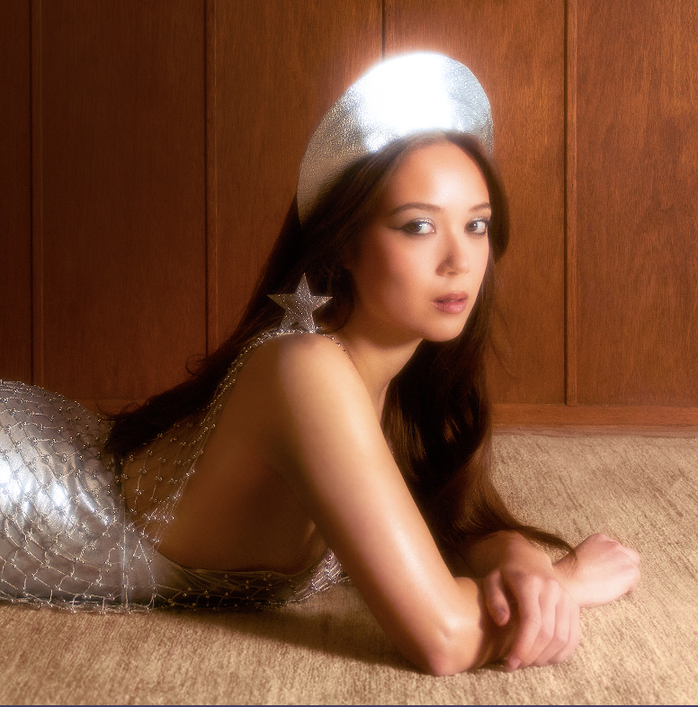
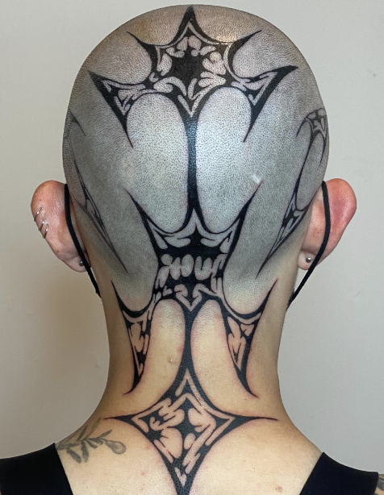

<!DOCTYPE html>
<html lan="en"></html>
<head>
    <meta charset="UTF-8">
    <title>i am inspired by</title>
</head>

<body>
    <h1>my name is hope marie david</h1>
        <h3>here are some of the artists that inspire me!</h3>
            <h2>
                <strong><em>tyler, the creator</em></strong>
            </h2>
                <a href="https://www.instagram.com/feliciathegoat/feed/">
                    
                </a>
                <h3>Tyler, The Creator is a rap artist/songwriter based in Los Angeles, California.</h3>
                <p>
                    He makes and produces music, designs clothing, and much more. <br>
                    Tyler inspires me due to how fearless he is when it comes to his creativity, <br>
                    and is constantly expressing himself unapologetically. <br>
                    Through his music, visual art, and fashion, he inspires me to embrace my uniqueness. <br>
                    Although I am not as unapologetic as he is when it comes to my self-expression,<br> 
                    I always look to him to encourage myself to be.
                </p>
            <h2>
                <strong><em>laufey</em></strong>
            </h2>
            <a href="https://www.instagram.com/laufey/?hl=en"> 
                
            </a>
                <h3>Laufey is a singer/songwriter based in Los Angeles, California. </h3>
                <p>
                    The main genre of music that she focuses on is an amalgamation of jazz, bedroom pop,<br> 
                    and bossanova. Something that initially sparked my attraction to her is her relatability and<br>
                    honesty within the music she makes. Within her lyrics, she also has a bit of wit and wordplay <br>
                    that makes her music very catchy and entertaining to me. She speaks to me artistically because she <br>
                    not only an artist, but she is also a fashion icon through her Instagram and photoshoots. <br>
                    She is so much of a fashion icon that there is a fanmade Instagram account that researches each <br>
                    outfit Laufey posts and lists each piece of clothing/accessory along with its price in the photo description.<br>
                    Laufey inspires me to be intentional with everything I do, but to also remember to take it easy on myself.
                </p>
            <h2>
                <strong><em>thank you saint</em></strong>
            </h2>
            <a href="https://www.instagram.com/thankyousaint/?hl=en">
                
            </a>
                <h3>Saint is a tattoo artist based in San Francisco, California.</h3>
                <p>
                    Their work ranges from small flash tattoos of little doodles to large abstract freehand auric readings<br>
                    in their own style. They start off by drawing the stencil with a sharpie marker directly onto the body. <br>
                    Their style is inspired by science, and often refers to scientific shapes like neurons,<br>
                    cells, or nature. They place tattoos based on an individuals musculature, and whichever placement <br>
                    best enhances their client. Saint inspires me to live my life the way I want and to love myself. 
                </p>
